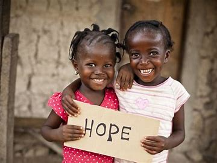

Notre Histoire
De l'espoir à l'action
Fondée en 2017, Light & Salt est née de la vision de créer un changement durable dans les communautés les plus vulnérables de l'est de la RDC. Notre nom "Light & Salt" reflète notre mission : être la lumière qui guide vers un avenir meilleur et le sel qui préserve et enrichit les vies.
Depuis nos débuts modestes avec une petite équipe de bénévoles passionnés, nous avons grandi pour devenir une organisation reconnue qui touche des milliers de vies chaque année. Notre approche holistique combine éducation, santé et nutrition pour créer un impact durable.
2017
Fondation de Light & Salt
2019
Premier programme d'éducation
2021
Expansion des services de santé
2024
Reconnaissance internationale
